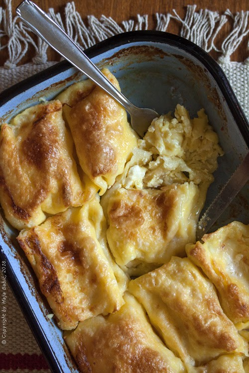

Strukle

Sastojci:
- 250 g mekog brašna
- ravna kašičica soli
- 1 jaje
- 100 ml mlake vode
- 1 kašika ulja
za fil:
- 500g sitnog sira
- 1 jaje
- 100 ml kisele pavlake
- pola kašičice soli (uskladite sa sirom)
- 250 ml slatke pavlake, za preliv
Postupak:
- U posudu za mešenje sipati brašno i so, promešati. Dodati jaje, vodu i jednu kašiku ulja i zamesiti testo. Dobro ga izmesite rukom ili varjačom, bar pet minuta. Ono će biti meko i verovatno će se lepiti za ruke. Skinite viškove testa sa ruku, operite ih i nauljite. Tako namašćenim rukama uzmite testo i oblikujte lep disk. Položite ga na malo namašćen tanjir, pokrijte plastičnom folijom i ostavite pola sata na sobnoj temperaturi (može i duže, kraće nije preporučljivo).
- Sve sastojke za fil - sir, jaje i pavlaku - izmešati, a zatim posoliti prema ukusu. Količinu soli prilagodite slanoći sira. Sitan sir koji se kod nas prodaje za pite i gibanice je obično sasvim blago slan, pa ga treba dosoliti.
- Stolnjak raširiti, obilno posuti brašnom na središnjem delu, pa malo i rukom to brašno raspršiti po platnu.